Food & Cooking | กิน & ทำอาหาร
| Deutsch | Thai | ไทย |
|---|---|---|
| essen | Kin | กิน |
| hungrig | Hiu | หิว |
| köstlich | Aroi | อร่อย |
| scharf | Phet | เผ็ด |
| salzig | Kem | เค็ม |
| süss | Waan | หวาน |
| bitter | K̄hm | ขม |
| sauer | Bpriao | เปรี้ยว |
| Guten Appetit | Dī Māk | ดีมาก |
| zum Mitnehmen | Ow Glap Baan | เอากลับบ้าน |
| hier essen | Thaan Thee Nee | ทานที่นี่ |
| Frühstück | Aahaan Chao | อาหารเช้า |
| kalt | Yen | เย็น |
| heiss | Rone | ร้อน |
| gebacken | Ob | อบ |
| gebraten | Tod | ทอด |
| gegrillt | Yāng | ย่าง |
| geröstet | Khạ̀w | คั่ว |
| gedämpft | Nụ̀ng | นึ่ง |
Noodle | พาสต้า
| Deutsch | Thai | ไทย |
|---|---|---|
 |
(Rice Vermicelli) Sen Mee | เส้นหมี่ |
| 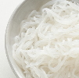 | (Rice Stick Noodles) Sen Lek | เส้นเล็ก |
 |
(Wide Rice Noodles) Sen Yai | เส้นใหญ่ |
| 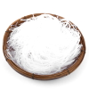 | (Glass Noodles) Wun Sen | วุ้นเส้น |
 |
(Egg Noodles) Sen Ba-Mee | เส้นบะหมี่ |
| 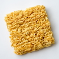 | (Instant Noodles) | บะหมี่กึ่งสำเร็จรูป |
Fruits | ผลไม้
| Deutsch | Thai | ไทย |
|---|---|---|
| 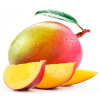 | (Mango) Ma-muang | มะม่วง |
| 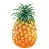 | (Ananas) Sapparot | สับปะรด |
| 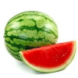 | (Wassermelone) Taeng Mo | แตงโม |
 |
(Papaya) Ma-lagor | มะละกอ |
 |
(Kokosnuss) Ma-prau | มะพร้าว |
| 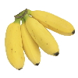 | (Banane) Gluay | กล้วย |
| 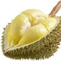 | (Durian) Turien | ทุเรียน |
 |
(Jackfrucht) Khanun | ขนุน |
 |
(Mangosteen) Mangkut | มังคุด |
 |
(Salakfrucht) Sala | สละ |
 |
(Thai-Orange) Som | ส้ม |
| 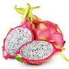 | (Drachenfrucht) Gaew Manggorn | แก้วมังกร |
| 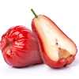 | (Javaapfel) Chompu | ชมพู่ |
 |
(Guave) Farang | ฝรั่ง |
 |
(Rambutan) Ngo | เงาะ |
| 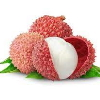 | (Litschi) Linchi | ลิ้นจี่ |
| 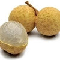 | (Longan) Lam Yai | ลำไย |
| 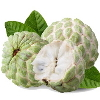 | (Zimtapfel) Noi Naa | น้อยหน่า |
| 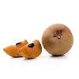 | (Sapodilla) Lamut | ละมุด |
| 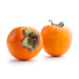 | (Kaki) Lôok-pláp | ลูกพลับ |
| 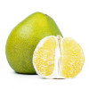 | (Pomelo) Sôm-oh | ส้มโอ |
| (Tamarinde) Má-kăam | มะขาม | |
| 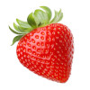 | (Erdbeere) Sà-dtror-ber-rêe | สตรอว์เบอร์รี่ |
 |
(Sternfrucht) Má-feuang | มะเฟือง |
Vegetables | ผัก
| Deutsch | Thai | ไทย |
|---|---|---|
| 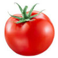 | (Tomate) Má-kĕua Tâyt | มะเขือเทศ |
| 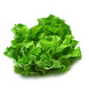 | (Salat) Pàk Gàat Hŏm | ผักกาดหอม |
| 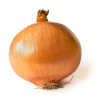 | (Zwiebel) Hŏm Hŭa Yài | หอมหัวใหญ่ |
| (Spinat) Pàk -kŏm | ผักโขม | |
| 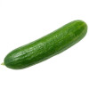 | (Gurke) Dtaeng-Gwaa | แตงกวา |
| 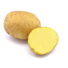 | (Kartoffel) Man Fà-ràng | มันฝรั่ง |
| 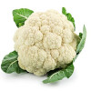 | (Blumenkohl) Gà-làm Dòk | กะหล่ำดอก |
| 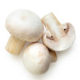 | (Pilze) Hèt | เห็ด |
| 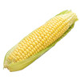 | (Mais) Kâao Pôht | ข้าว โพด |
| 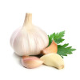 | (Knoblauch) Grà Tiam | กระเทียม |
| (Karotte) Kae-rôt | แครอท | |
| 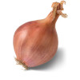 | (Charlotte) Hŏm Daéng | หอมแดง |
| 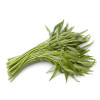 | (Wasserspinat) Pàk Bûng | ผักบุ้ง |
| (Chili) Prík | พริก | |
| 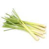 | (Zitronengras) Dtà-krái | ตะไคร้ |
| 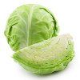 | (Weisskohl) Gà-làm Bplee | กะหล่ำปลี |
| (Ingwer) Kĭng | ขิง | |
| 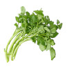 | (Brunnenkresse) Pàk Nám | ผักน้ำ |
| 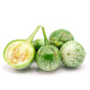 | (Thai-Aubergine) Má-kĕua Yaao | มะเขือยาว |
Meals | จาน
| Deutsch | Thai | ไทย |
|---|---|---|
 |
(Fried Rice) Khao Pad | ข้าวผัด |
| Pad Kra Pao | ผัดกะเพรา | |
| 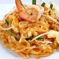 | Pad Thai | ผัดไทย |
 |
Som Tam | ส้มตำ |
| 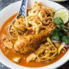 | Khao Soi | ข้าวซอย |
| 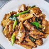 | Pad see ew | ผัดซีอิ๊ว |
| Tom Kha Gai | ต้มข่าไก่ | |
 |
Guai Tiao Nam Sai | ก๋วยเตี๋ยวน้ำใส |
| 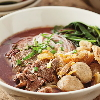 | Guai Tiao Nam Tok | ก๋วยเตี๋ยวเรือ |
| 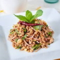 | Larb | ลาบ |
| 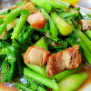 | Pad Kana Moo Grob | ผัดคะน้าหมูกรอบ |
| Yam Woonsen | ยำวุ้นเส้น | |
 |
Pad Prik Gaeng | ผัดพริกแกง |
| 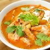 | Tom Yam | ต้มยำ |
 |
Gaeng Kiaw Wan | แกงเขียวหวาน |
 |
Gaeng Panaeng | แกงพะแนง |
 |
Gaeng Massaman | แกงมัสมั่น |
 |
Pad Pak Bung | ผัดผักบุ้ง |
| 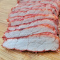 | (Rotes Schweinefleisch) Moo Daeng | หมูแดง |
| 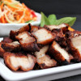 | (Knuspriges Schweinefleisch) Moo Grob | หมูกรอบ |
| 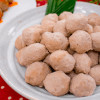 | (Fleischbällchen) Luk Chin Moo | ลูกชิ้น |
| (Schwein) Moo | หมู | |
 |
(Rind) Néua-wua | เนื้อวัว |
| 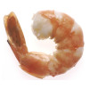 | (Shrimps) Goong | กุ้ง |
| (Fisch) Pla | ปลา | |
| (Gemüse) Pak | ผัก | |
| 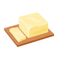 | (Butter) Noei | เนย |
| 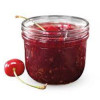 | (Marmelade) Yaem | แยม |
| (Ei) Khai | ไข่ | |
| (Nudeln) Guaitiaw | ก๋วยเตี๋ยว | |
| (Reis) Kaao | ข้าว | |
| (Huhn) Gai | ไก่ | |
| 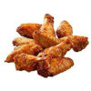 | (Chicken Wing) Bpèek Gài | ปีกไก่ |
| (Würstchen) Sâi Gròk | ไส้กรอก | |
| (Bacon) Bay-kon | เบคอน | |
| 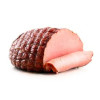 | (Schinken) Haem | แฮม |
| 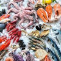 | (Seafood) Aa Hăan Tá-lay | อาหาร ทะเล |
| 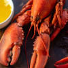 | (Lobster) Gûng Gâam Graam | กุ้งก้ามกราม |
| 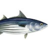 | (Thunfisch) Bplaa Too-nâa | ปลาทูน่า |
| (Krabbe) Bpoo | ปู | |
| (Tintenfisch) Bplaa Mèuk | ปลาหมึก | |
| (Fischbällchen) Luk Chin Bplaa | ลูกชิ้นปลา | |
| (Spiegelei) Khidāw | ไข่ดาว | |
| (gekochtes Ei) Khi Tim | ไข่ต้ม | |
| (Sticky Rice) Kâao Nĭeow | ข้าวเหนียว |